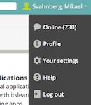
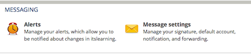
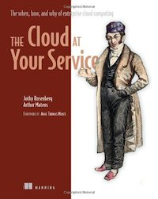
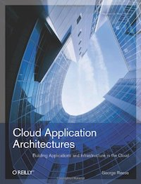
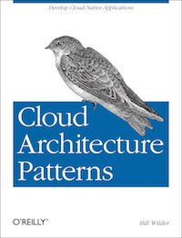
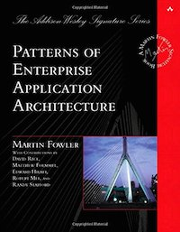
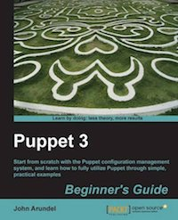
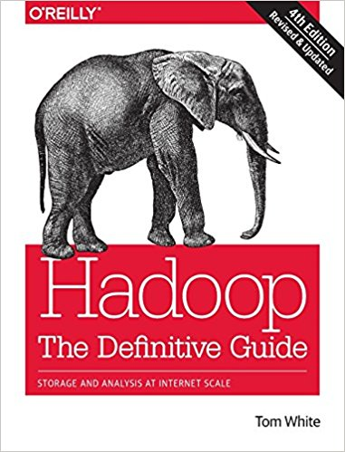
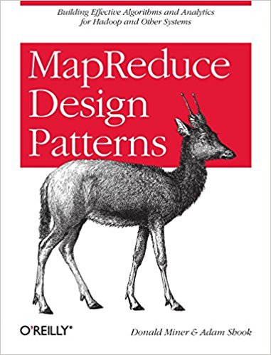
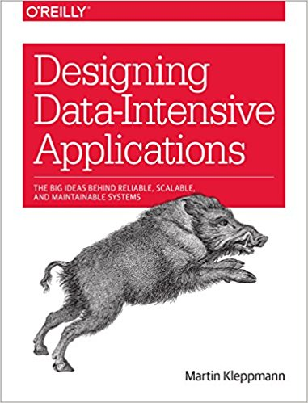

Sprint 0: Course Introduction
Table of Contents
- 1. About This Sprint CoursePM
- 2. User Stories covered in this Sprint
- 3. Introduction
- 4. Learning Material
- 5. Experiential Learning
- 6. Sprint Acceptance Tests
1 About This Sprint CoursePM
This sprint introduces the course and the course structure. This sprint also serves as the required Course PM to explain in more detail how the couse is going to be conducted in relation to the course syllabus.
2 User Stories covered in this Sprint
- As a student I want to pass this course.
- As a student I want to understand how this course is structured so that I can quickly find the information I need to learn the subject.
- As a student I want to know why this topic is important so that I can be properly motivated.
- As a university we require all courses to have a “Course PM” so that the students can get further information about the courses they are taking.
3 Introduction
Welcome to the course!
Of course you want to pass the course, and we want you to too. This document is intended to give an overview of how the course is structured, and give you a “map” of sorts to the rest of the course material. It is my hope that this will help you find the material you want easily so that you can focus on learning each part of the course.
3.1 A Brief Introduction to the Course
There are many definitions of Big Data available, but at the core of them is that the data volume, acquisition speed, or data representation limits the capacity of using traditional relational methods to conduct effective analysis or the data which may be effectively processed with important horizontal zoom technologies (emphasis ours) (From the NIST Definitions). One often talks about the “Four V’s o Big Data:
- Volume
- The amount of data
- Velocity
- The speed at which data is generated and needs to be processed
- Variety
- Types of data
- structured, semi-structured, unstructured
- numbers, text, audio, video
- …
- Value
- large value but low density
And the challenges these four V’s impose when it comes to storing, representing, and analysing these vast volumes of heterogeneous data. One may (and researchers often do) dig into each one of these challenges (and many sub-representations of each of these challenges), but that will not bring you nearer to understanding how to actually work with a Big Data Problem. That is the focus we take in this course. We study Big Data, not as an excuse to develop fancy algorithms, but rather the tools and the problem mindset necessary to work with large volumes of data. This includes storing the data, accessing the data in an environment for conducting various computations on the data, considering what problem you wish to use the big data to analyse, how to rething the problem and/or the solutions in a scalable way, and how to scale your analysis solution accordingly.
One of the supporting technologies for Big Data is that of Cloud Computing, but Cloud Computing can be used for so much more than Big Data. So with a similar focus on workable solutions we introduce cloud computing in order to ultimately tie it in with the analysis of a Big Data problem, but the path towards this goal will provide hands-on experience in a number of tools and techniques for quickly setting up and maintaining a cloud platform. Specifically, we will study the business case of cloud computing (the reasons for “going to the cloud”), as well as tools to set up, provision, and test a cloud solution both locally with the help of virtual machines and ultimately how to set up and provision a live cloud environment. Throughout this we advocate “one-click” provisioning and the setting up of a local development environment, a test environment, and – on the cloud – production environments.
Tying the two threads together you will then set up and provision a small Hadoop cluster in order to run a MapReduce job to analyse a big data problem.
In essence there are three (more or less independent) paths through the course material:
- Introduction to Big Data, and Analysis of Big Data Problems
- Introduction to Cloud Computing, and the Business Case for Cloud Computing
- Cloud Computing Provisioning and Deployment
Connected to each of these paths are a number of lectures and a number of exercises (or, in the case of the Cloud Business Case a reflective report) that lead you onwards to the ultimate goal of solving a Big Data problem with the help of a Cloud Computing solution.
3.2 Course Structure: Sprints, Learning Material, and Experiential Learning
Video: A Brief Introduction to the Course Structure
The course is divided into a series of Sprints, that is, short iterations that focus on a small number of issues per sprint. We have borrowed this term from the agile development methodology Scrum.
Speaking of agile, there are a few other things we have borrowed from there as well. The User Stories that each sprint document starts with is one such thing. A user story is a sort of stylised requirement, and we use them to set you into the right frame of mind for each sprint. As you notice, the user story contains information about which perspective you should have, the goals you should achieve, and a brief explanation of why this goal is important.
Related to this is the Sprint Acceptance Tests that you find at the bottom of each sprint document. These acceptance tests tell you how we plan on ensuring that the goal of the sprint has been reached.
The bulk of the sprint consists of Learning Material, and Experiential Learning. Learning material are book chapters, videos, blog posts, etc. that you can use to learn more about the topic in the sprint. Experiential Learning (which is not a good name, but we can’t think of any better) consists of different activities you should do as part of the sprint. Some of these activities are just practice activities. Others are activities that will help you organise the material better. Others again are those activities that we (as teachers) would like to look at to assess your progress. Let me repeat this:
Experiential Learning are things you are supposed to do, and includes:
- Things you do for practice
- Things you do to organise the material
- Things you submit as assignments to the teachers for marking
You will note that in some sprints you are expected to produce an assignment document and commit/push it to your project repository without actually submitting it for marking. These documents are intermediate steps, and you will be using the knowledge gained from them when creating the documents that will be marked. In some cases, we will go back to them when marking a subsequent assignment to see that you have not missed anything. In other cases, we will go back to them to be able to follow your reasoning in your submission. We try to ensure that the overhead of creating these documents (as opposed to just doing the analysis/design work) is minimal. Please do not skip these documents just because they are not submitted; they are a helpful and sometimes necessary tool to be able to continue.
Exactly what documents you should deliver for marking is detailed in a set of Release Sprints, where you package and submit the previously created material.
Some activities are started during this sprint, and then we ask you to revisit them during every subsequent sprint. The idea with these activities are to help you structure your learning, and give you a means to follow your own progress.
3.3 Themes and Assignments
The assignments in this course are a mix of hands-on tasks, problem solving activities and reflection exercises where students use their analytical and argumentative abilities. The assignments cover three themes:
- Big Data and the Cloud Business Case
- In a business environment, the decision to employ big data analystics and/or migrate services to a cloud environment should be governed both by technical and economical considerations. In this assignment, the students write an essay, describing a business case, (potentially) inspired and motivated by their professional experience, for (or against) employing big data analytics and/or cloud services.
- Cloud Provisioning and Deployment
- In this theme, the students will perform hands-on tasks to get familiar with technologies that are central for the provisioning and deployment of cloud services. Along with these practical assignments a reflective experience report is written.
- Big Data Analytics
- The goal in this theme is to illustrate how to satisfy a knowledge need, relevant for Software Engineers, through the analysis of a large (not necessarily BIG) data set. Concretely, the students will get familiar with, modify and improve a code clone detection tool. The practical exercises will require the students to understand the code clone detection algorithm and data structures, and migrate the code clone detector from a local to a distributed environment. Along with these practical assignments a reflective experience report is written.
Each theme requires the students to produce one or more deliverables (see Assignment Submission on how to submit deliverables).
3.4 Your Next Steps
- Read through the Learning Material.
- Get an overview of the course, the course layout, and the different assignments (listed below)
- Perform the tasks listed under Experiential Learning.
- Select one of the themes and start working on the sprints.
- We invite you to an introductory lecture on the 28:th of August between 13:00 and 15:00. This meeting is online, using Adobe Connect. The Meeting URL is https://connect.sunet.se/cloudbd/ . Welcome!
4 Learning Material
4.1 Course PM Overview CoursePM
The Course PM is required for all courses and should provide information about courses in addition to the course syllabys. We have chosen to include the Course PM as a part of this introductory text. Relevant sections are linked below, and tagged with CoursePM in the headings.
| Course Overview | |
|---|---|
| Course Platform | ItsLearning and https://mickesv.github.io/cloudbd/ |
| Further Information | |
| Course Responsible | Mikael Svahnberg, mailto:Mikael.Svahnberg@bth.se |
| Michael Unterkalmsteiner, mailto:Michael.Unterkalmsteiner@bth.se | |
| Examiner | Mikael Svahnberg, mailto:Mikael.Svahnberg@bth.se |
4.1.1 Common Information for all Courses CoursePM
In all course-related communication, we prefer if you use your BTH-student email address. Using other email addresses or varying email addresses can lead to problems and issues that we cannot take responsibility for.
| Writing guide(s) | http://writingguide.se |
| Plagiarism and cheating | https://studentportal.bth.se/web/studentportal.nsf/web.xsp/plagiarism_and_cheating |
4.1.2 Overall Course Goals and Contents CoursePM
The overall goal of the course is to get you started with understanding when and how to use cloud services, and to understand the basics of big data analytics. The course consists of assignments that both allow you to reflect on the topic, but also to work through hands-on examples of solving a big data problem and setting up and provisioning cloud services.
The Detailed aims and contents are listed below (In Swedish, copied from the course syllabus):
Syfte
I dagens mobila uppkopplade värld genereras stora mängder data som behöver hanteras, analyseras, och länkas samman. Detta görs på en stor mängd servrar på det så kallade Molnet. Utvecklingen, driftsättningen, och hanteringen av dessa kallas Cloud Computing. Syftet med den här kursen är att ge en bred bakgrund om att designa, utveckla, driftsätta, testa, och övervaka en cloud-lösning, specifikt med fokus på stora datamängder. Kursen ger en översikt över populära cloud-plattformar samt design och driftsättning av cloud-applikationer. Vidare introducerar kursen MapReduce, nosql-databaser, och verktyg för storskalig distribuerad dataanalys såsom Hadoop, och hur dessa kan driftsättas i en cloud applikation.
Innehåll
Kursen ger en översikt över populära cloud-plattformar samt design och driftsättning av cloud-applikationer, inklusive cloudbaserad lagring. Vidare diskuterar kursen lösningar för Big Data-analys. Kursen är indelad i fem moduler:
- Big Data - What, Why, When, How, Who (Grundläggande koncept för Big Data)
- Basics of Cloud Computing (Grundläggande koncept och målen med Cloud Computing)
- Cloud Infrastructure (Tekniska lösningar och arkitekturer för Cloud Computing)
- Big Data Analysis (Strategier för analys av Big Data problem)
- Command and Conquer (Övervakning och skalning av Cloud/Big Data lösningar)
4.1.3 Course Structure CoursePM
The online presence of this course consists of these pages, and is organised as a set of sprints, where each sprint focus on a small topic and a few user stories. In each sprint there are things to read and watch, as well as activities to do. The result of some of those activities will be submitted as assignments for marking.
Some of ther sprints are so called release sprints. In these sprints you primarily package what you have done in previous sprints, but you may also be requested to produce new material during the release sprint too. This is then delivered as a course assignment for marking.
We are available online once per week via Adobe Connect (Tuesdays, 13:30 to 14:30). We welcome communication via e-mail, It’s Learning, and phone.
4.1.4 Learning Outcomes CoursePM
Kunskap och förståelse
Efter genomförd kurs ska studenten:
- Ingående kunna redogöra för utmaningar med Big Data-analys
- Ingående kunna redogöra för olika typer av cloud-plattformar
- Ingående kunna redogöra för vanliga anledningar att söka sig till en cloudlösning, och utmaningarna med dessa.
- Ingående kunna resonera om lösningar till vanliga utmaningar med cloudlösningar.
Färdighet och förmåga
Efter genomförd kurs ska studenten:
- Självständigt kunna sätta upp en utvecklingsmiljö som består av både lokala maskinkonfigurationer och cloudbaserade maskinkonfigurationer.
- Självständigt kunna implementera och sätta upp en Big Data-analys, inklusive konfiguration av cloud-plattformen och eventuell databas.
- Självständigt kunna sätta upp kontinuerlig övervakning och styrning av en big data/cloudlösning.
Värderingsförmåga och förhållningssätt
Efter genomförd kurs ska studenten:
- Kunna värdera olika anledningar att välja en cloudlösning och välja en lämplig lösning därenligt.
- Kunna värdera en problemformulering för en Big Data-analys och utvärdera potentialen att skapa en cloud-skalbar lösning.
4.1.5 Examination CoursePM
4.1.5.1 Assignments
The assignments in this course are a mix of hands-on tasks, problem solving activities and reflection exercises where students use their analytical and argumentative abilities. The assignments cover three themes:
- Big Data and the Cloud Business Case
- Cloud Provisioning and Deployment
- Big Data Analytics
Each theme requires the students to produce one or more deliverables (see Assignment Submission on how to submit deliverables).
4.1.5.2 Deadlines and re-examination
The deadlines are negotiated between each student and the teachers, as long as they are within the semester during which the course is offered. Similarly, re-examination is decided on a case to case basis. Please see the Assignment Submission instructions.
4.1.6 2017 Schedule CoursePM
We invite you to an introductory lecture on the 28:th of August between 13:00 and 15:00. This meeting is online, using Adobe Connect. The Meeting URL is https://connect.sunet.se/cloudbd/ . Welcome!
Throughout the course we are available on the same Adobe Connect URL on Tuesdays between 13:30 and 14:30 to answer questions or discuss the course in general.
4.2 Assignment Submission
4.2.1 Assignment Submission and Dates
- The course is offered during two study periods (1 semester)
- During this time, you are expected complete all assignments and submit them for marking.
- Based on the marking, you may need to complement your submissions with additional material.
- Complementing assignments can be done during the semester, within four weeks of the end of the semester, or in August.
- Complementing assignments after the semester is only allowed if your original submissions were made during the semester and were non-trivial.
- An assignment may only be complemented twice.
- Given these constraints, you are free to plan your submissions as you see fit.
4.2.2 Submissions
Assignment submissions are done via e-mail as a written report or a well-annotated set of presentation slides, unless otherwhise stated.
4.2.3 Resubmissions
In a resubmission, please:
- highlight changes you have made!
- discuss, where applicable, the changes you make
4.2.4 A Note On Confidentiality
You will submit your assignments to the course managers, and we will review them in order to give you feedback and to examine you on the course. You may also form study teams to review each other’s work. Apart from this, no-one else will see your assignments unless you decide to show them.
There are ways to make sensitive information less sensitive. Some generic advice is to:
- Describe the types of stakeholders involved rather than the specific roles.
- Report numbers as percent of a total instead of the absolute numbers (for example, a process step may take x days or y% of the entire process), or express time in some generic “time unit” measure.
- If the motivations for your choices are sensitive, then keep them in a separate document that you can share with the course managers, and share a less sensitive version with your study team.
4.3 A Note on the Three-Week Roll Call
We are mandated to have a roll call in all our courses three weeks after the course starts, because of how the government pays us based on student registrations and student completions of a course. This roll call is a simple show of hands to count how many are actually active in the course. If you do not participate in the roll call, you are considered inactive, and will be deregistered from the course.
For this course we use the “Post on Discussion Board” experiential learning (below) as input to the three week roll call. It is therefore vital that you post the introduction about yourself on the course discussion board within the first three weeks of the course!.
4.4 A Note on Reading Research Articles
This course may suggest research articles for you to read. This may seem a daunting task for you, but there are some general guidelines that may help you:
- Start by reading the abstract and the conclusions. These will tell you what problem or area the article is addressing, and what the article contributed to solving the problem.
- The articles in this course have – to a large extent – been chosen because they summarise the topics in various ways. To find these summaries, look for lists, figures, and tables in the article. Read these. Read the text around them, or where the figures and tables were referenced, in order to get an explanation of how to interpret them.
Generally, interpret each section of an article as follows:
- The introduction section in an article puts the problem into context, and might give you clues as to how other researchers have solved it before. You can use this section to get a generic overview.
- The related work section should discuss in further detail what other researchers have done that is similar to, or relates to, the article you are reading. This may give you an idea of how others have addressed the problem, and may give you pointers to other articles that you would wish to read.
- The methodology section explains how the study was conducted. Once an article is published (which they naturally are in this course), this is mostly interesting if you distrust some of the results and want to see if anything has been missed when constructing the study.
- The execution and results sections describe how the study was executed (in particular discrepancies from the planned methodology), and what the raw results were. Most of the time, you can safely skip these sections.
- The analysis section “bakes” the results and tries to answer the research questions (address the identified problem). This is probably the most interesting section for you to read.
- The discussion section should raise the view and try to see what the results actually mean in a bigger context. What can you do with the results? “So what?”. This is a tricky section to read, since the authors want you to believe that their results are the best thing invented since hot porridge, but at the same time they have to identify threats to the validity of the study. Validity threats are things that could have influenced the results instead of the sought after effect. This may be things that happened at the same time, inadequacies in the researchers skills and abilities, or inadequacies in the research design. Please remember, when (or if) reading this section, that most of the identified validity threats are minor obstacles (or the article would not have been published) that may impact the scientific view of the results more than the practical significance or usefulness of them.
- The references may give you ideas for other articles that you would like to read.
The bottom line is that when being told to read a lot of research articles, the trick is to learn how to not read them while still getting the gist of them. Hopefully, the “map” described above may provide some help in identifying the parts of an article that are important for you.
4.5 A Further Note on the Recommended Study Pace
Each sprint in this course is estimated to take roughly 20 hours (this amounts to 2 weeks at 1/4 of full time study pace). You may plan this as you see fit, but ultimately you need to spend an average of 10 hours each week to be able to complete the course within the planned semester.
We know that once the initial rush has settled after a couple of weeks it is tempting to put the course on the back burner and get on with your life, your family, and your work. Please don’t! It is much harder to come back to the course later, and the required effort does not get smaller over time – it merely piles up.
Instead, we recommend that you schedule time every week to work on the course.
Some other advice:
- Try to set aside larger continuous blocks of time since it is easier to become engrossed thusly (cf. “Ställtid”, that Bodil Jönsson writes about).
- If you are able to commute to work by bus or train, this is an excellent time to read the research articles – maybe you can temporarily switch to bus or train?
- Talk to your boss. Discuss the assignments with them. Can you tweak the assignments so they become more useful for your company, and can you then get a few hours per week to work on them during office hours?
4.6 A Note on The Sprint Test Plan?
The Sprint Test Plan is a way to get an overview of your expectations in the course, in relation to the provided material, and align it with our expectations as course responsibles and examiners. In some sense, it is also your strategy for learning the topics. We will not mark your Sprint Test Plan – you are creating and maintaining this for your own sake.
The Sprint Test Plan will be revisited during every sprint, so that you have an updated record of what you need to learn to pass the course.
We are loosely basing our suggestion for the Sprint Test Plan document on the IEEE 829-2008 standard. Feel free to add other information to it if you think it is relevant.
4.7 A Note on the Course Backlog
As you study, we expect that you will get more questions, or additional information sources (blog pages etc.) that you would like to read, and we hope you will also get ideas for places where you would like to test what you have learnt. Put these into a course backlog document (it will help if you put them in a roughly prioritised order), and then spend time during each sprint to resolve your backlog items.
At the end of the course, it is our hope that your backlog contains pointers to yourself with how you should go forward with the knowledge gained. For example, are there any particularly interesting things you have found that you would like to study more? Are there any courses you are interested in taking as a consequence of taking this course? Are there any practices that you would like to introduce into your organisation? How?
Order the items in your course backlog according to your needs and priorities.
The course backlog is revisited in every sprint. We will not mark it; you create it for your own benefit.
5 Experiential Learning
5.1 (Optional) Create Infrastructure
Introduction. Collaboration over the assignments is made easier if you use a configuration management system such as Subversion or Git. This also opens up for easier review of your work before or during assignment submissions.
If you also write your documents in for example Markdown, they are formatted for you by github. One of the course responsibles is partial to Org-mode and Emacs, especially because of the nice integration with other tools such as PlantUML for generating design diagrams, and for the excellent export facilities. Org-mode is also nicely supported by github.
Things to do:
- Create an account on Github (or use your existing one)
- Create a Project for the course
OOD-<course code>-<your name> - Invite me (mickesv) to the project
- checkout your project and create a directory structure:
/Assignments//SprintTestPlan//CourseBacklog/
- add a file to each directory, otherwise you will not be able to commit them. For example, add an empty
.gitignorefile to each directory. - commit and push
5.2 Log in to It’s Learning
Log in to the university’s course management system, It’s Learning, and make sure you can access the course.
Click on your name in the top right corner and select “Your settings”: 
Configure the alerts and the message settings so that you get e-mails whenever we publish anything new info about the course.

Please Note: You need to go in to Message Settings and make sure that the e-mail address is properly configured, and go in to Alerts to activate your notifications. Under Alerts you need to Activate e-mail notifications and select which of “new assignments, news (main dashboard), and your subscriptons (main dashboard)" you want alerts about. Initially, we recommend that you check all of them. If you get too much information, you can always go back and uncheck items later.
5.3 Post on Discussion Board Assignment
Join the Course Discussion Board (on It’s Learning) and post a short introductory paragraph about yourself. This provides info to your fellow students, and also verifies that you have joined the discussion group and can post to it.
This serves as a roll call for the course, and ensures that you will remain registered to the course.
5.4 Buy Course Books CoursePM
5.4.1 Official Course Books

J. Rosenberg, A. Mateos, The Cloud at your Service, Manning, 2010. ISBN-10: 1935182528 | ISBN-13: 978-1935182528
A fairly ok all-purpose book. A bit management-heavy, but it is surprisingly difficult to find books about cloud computing that focus on the technical construction of a cloud application. Chapters 4 and onwards become more technical.

G. Reese Cloud Application Architectures, O’Reilly, 2009. ISBN-10: 0596156367 | ISBN-13: 978-0596156367
On a higher level; it does not go into detail in the same way about how you would design your software architecture, but does go through some of the technical challenges with a cloud solution. Also has some nice writeups of the motions you need to go through in order to get a virtual machine up and running on different cloud providers.
5.4.2 Additional Books

B. Wilder, Cloud Architecture Patterns, O’Reilly, 2012. ISBN-10: 1449319777 | ISBN-13: 978-1449319779
Contains a number of design and architecture patterns that addresses different challenges in cloud applications. Has a running example using Microsoft Azure.

M. Fowler, Patterns of Enterprise Application Architecture, Addison-Wesley, 2002. ISBN-10: 0321127420 | ISBN-13: 978-0321127426
A large collection of design patterns specifically designed for the type of large scale applications that you would expect in a cloud environment.
C. Hofmeister et al., Applied Software Architecture, Addison-Wesley, 1999. ISBN-10: 0201325713 | ISBN-13: 978-0201325713
A lot of designing a cloud application is simply about making conscious software architecture decisions, so any generic software architecture book would help here.
I still like this book even if it has a few years under the belt by now and may be difficult to get your hands on. The reason for this is that it is one of the few software architecture books I have seen that almost solely focus on the architecture decisions, and present a methodology that allows you to identify the need for architecture decisions, take the decisions, and implement the decisions in different viewpoints – all while retaining traceability back to the source.
L. Bass el al., Software Architecture in Practice, Addison-Wesley, 2012. ISBN-10: 0321815734 | ISBN-13: 978-0321815736
Also a general-purpose software architecture book. I find this book to be less hands on with a design methodology and more shoot-from-the-hip, but there is a large section on architecture tactics, i.e. solutions and structures that address different quality concerns. These are, I find, a great inspiration for the architectural decisions (and thus fits nicely in with Hofmeister et al).

J. Arundel, Puppet 3: Beginner’s Guide, Packt Publishing, 2013. ISBN-10: 1782161252 | ISBN-13: 978-1782161257
To dig deeper into Puppet and how to use it to create an enterprise deployment environment, you should look into a book on Puppet. Any book on Puppet would work. I have read a couple and they seem to follow more or less the same format. Arundel is a good enough pick.

T. White, Hadoop: The Definitive Guide, O’Reilly, 2015, ISBN-13: 978-1491901632 | ISBN-10: 1491901632
The reference book for Hadoop and its ecosystem. If you don’t find your answer to technical Hadoop questions in here, you likely pose the wrong question.

D. Miner, A. Shook, MapReduce Design Patterns, O’Reilly, 2012, ISBN-13: 978-1449327170 | ISBN-10: 1449327176
Once you don’t have any technical questions about Hadoop anymore, this book will help you to design MapReduce applications and algorithms. Each design pattern provides a quick description of the problem, typical use cases, when the pattern can be applied and the structure of the MapReduce job(s). Very useful content as it helps you to rethink well-known problems in terms of MapReduce.

M. Kleppmann, Designing Data-Intensive Applications, O’Reilly, 2017, ISBN-13: 978-1449373320 | ISBN-10: 1449373321
This book is a great resource to learn more about the design of applications that predominantely handle data. While technology is in the center of the book, technological details are not. As such, the content of this book is less prone to get out of date as it explains the concepts behind specific, currently en-vogue technologies (which are nevertheless referenced in the book so you can go to practice immediately).
Your Book
If you find a book that you think should be included here, please send me an e-mail, and tell me about the book and why it should be included.
5.5 Get Started With AdobeConnect
5.5.1 Equipment and Tutorials
- Get a decent headset. We recommend that you make sure that you have a decent headset with microphone (for example, the USB headset Logitech H390, or equivalent from any other brand). The sound quality in your mobile phone headsets is usually not sufficient.
- Go through the Adobe Connect Tutorials.
5.5.2 Test
The course has a dedicated Adobe Connect meeting room that is always open and available for you to use – for example for collaborating with other students in the course. At certain regular times (to be announced later) teachers in the course are also online here for discussions.
Because of reasons, we do not publish the address to the meeting room here. Instead, you will find it on It’s Learning.
Once you are “in”, there is an audio setup guide that you should go through the first time you visit.
Experience tells us that the first times you connect there will be various problems before you have the audio working. Expect this, and plan accordingly.
5.5.3 Known problems
- On OSX, the right audio source/destination need to be selected before you connect to the Adobe Conenct meeting room. Alt-click on the speaker-icon in the menu bar to check this.
5.6 (Optional) Form Study-Groups
Although not strictly required, we encourage you to find like-minded peers who are also taking the course and team up so you can study and learn together. Use their introduction on the course discussion forum to get a general idea about your course colleagues.
5.7 (Optional) Create a Sprint Test Plan
Create a document with the following sections:
- Test Items. These are the assignments you are expected to submit for marking. It will probably be a good idea if you are able to tag them with the corresponding sprint, so that you can easily find them.
- Features to be Tested. These are the user stories at the top of every sprint. Describe each of these features in terms of the object oriented modelling concepts or software development concepts that you need to master before you can satisfy the user story.
- Approach. Here, you will describe your strategy for ensuring that you have learnt the material in the sprint. How do you ensure that you are confident that the assignments you submit will pass with the grade you are aiming for?
- Item Pass/Fail Criteria. What do you have to be able to show to yourself to ensure that you have learnt the material in the sprint? What do you have to show in the submitted assignments?
- Schedule. When do you plan on passing each test item and feature?
- Planning Risks and Contingencies. Are there any foreseeable risks that may limit your ability to pass the course on time? What is your contingency plan?
- Glossary. In this section you will build up a glossary of important terms in the course that you can use when studying. we suggest you collaborate with the rest of the class in the course discussion forum (on It’s Learning) and post your terms and definitions there so that they can be discussed.
In this sprint, the following items can be added already (you may think of more items, please add them too):
- Test Items
- Approach
- Outline your plan for reading the course books and doing the sprints in time.
- Describe your plan for interacting with the other students in the course.
- Item Pass/Fail Criteria
- Outline your ambition level; what grade are you aiming for?
- Planning Risks and Contingencies
- Do you plan on taking any vacations (e.g., skiing trip, easter, ascension day, etc.)? When will you study more to compensate for this? Are your study-mates informed and ok with that you contribute less during these vacations?
- What is the expected workload for activities and work you are doing in parallel to this course? Does your plan for this course accomodate your plans for these other activities?
- Do you have time available if you are asked to complete your submitted assignments with more information?
- Are there any other risks you see at this stage?
5.8 (Optional) Update Course Backlog
Where do you go from here? Are there any questions already now that you want answered? Add them, along with a brief strategy for how to find an answer.
6 Sprint Acceptance Tests
You are done with this sprint when:
- You have bought the literature you want/need for the course.
- You have acquired the necessary equipment and tested AdobeConnect
- You have logged in to It’s Learning and set up forwarding to your e-mail address
- You have posted an introduction about yourself in the course discussion forum
You may also have
- Created a Project on e.g. Github
- Created a Sprint Test Plan
- Created a Course Backlog
- Formed a study-group